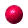

The Optics Project

Some movies from TOP modules

Download Quicktime plugin

Converging lens, object outside the focal point.
Two converging lenses, real intermediate image located between the two lenses.
Michelson interferometer, translation mirror moving and tilt mirror stationary.
Two converging lenses, virtual intermediate image located to the left of the first lens.
Converging lens, object inside the focal point.
Two converging lenses, virtual object for the second lens.
Rayleigh resolution criterion, change of angle between the sources.
Rayleigh resolution criterion, change of wavelength.
Rayleigh resolution criterion, change of diameter of the lens.
Unpolarized light incident from air onto glass at Brewster's angle.
Note the random behavior of the incident electric field, e.g., the white vector.
Unpolarized light incident from air onto glass at Brewster's angle.
Note that the reflected electric field is linearly polarized perpendicular to the plane of incidence.
Unpolarized light incident from air onto glass at a glancing angle of incidence.
Note that the incident and reflected electric fields are behaving randomly.
Linearly polarized light polarized perpendicular to the plane of incidence
incident from air onto glass.
The angle of incidence is 85 degrees. Note the pi phase change upon reflection.
Linearly polarized light polarized parallel to the plane of incidence
incident from air onto glass.
The angle of incidence is initially 40 degrees, and is then changed to 76 degrees. In the former case there is
no phase change upon reflection and in the latter case there is a pi phase change upon reflection.
Linearly polarized light polarized perpendicular to the plane of incidence
incident from glass onto air.
The angle of incidence is initially the critical angle, is then changed to 58 degrees,
and is then changed to 89 degrees. In the first case there is no phase change upon reflection, in
the second case there is a pi/2 phase change, and in the third case there
is a pi phase change upon reflection. Disclaimer: the evanescent waves in
the air are not being pictured.
Linearly polarized light polarized parallel to the plane of incidence
incident from glass onto air.
The angle of incidence is initially 21 degrees, and is then changed to 42 degrees. In the first case there is a
pi phase change upon reflection, and in the second there is no phase
change uopn reflection. Disclaimer: the evanescent waves in the air are
not being pictured.
Linearly polarized light polarized parallel to the plane of incidence
incident from glass onto air.
The angle of incidence is initially 47 degrees, and is then changed to 89 degrees.
In the first case there is a pi/2 phase change upon reflection, and in the second there is a pi phase
change upon reflection. Disclaimer: the evanescent waves in the air are not being pictured.
Fresnel diffraction from a single slit: change of position of observation
screen.
The wavelength and slit width are held constant and the position of the
observation screen is varied. The initial and final Fresnel numbers are
1.00 and 3.00, respectively.
Fresnel diffraction from a single slit: change of the slit width.
The wavelength and position of the observation screen are held constant
and the width of the slit is varied. The initial and final Fresnel
numbers are 2.00 and 5.00, respectively.
Fresnel diffraction from a single slit: change of the wavelength.
The slit width and position of the observation screen are held constant
and the wavelength is varied. The initial and final Fresnel numbers are
3.00 and 2.08, respectively.
Created
by Srihari Angaluri and Kiril Vidimce
Send comments to comments@webtop.org